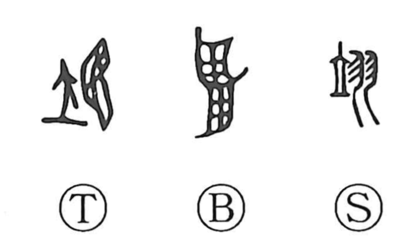

翌

Kun: | On: yoku
next day ・ following day ・ tomorrow
Explanation
A phono-semantic graph: the wing element shows the original image, while 立 functions as the phonetic, signaling the on-reading (as it does in characters like 位 and 昱). In early forms the character was written 翊, with the pure wing pictograph later augmented by 立; this eventually yielded the standardized form 翌. In oracle-bone inscriptions, 翊 appears as the name of a ritual day, specifically the “bright day” (meijitsu) among the five Zhou state worship festivals, and from that context it came to mean the next or following day—hence “tomorrow.” Over time the graphs differentiated: 翊 came to be used (by extension of 翼) with the sense “to assist,” while 翌 was reserved for the temporal meaning “the next day.”